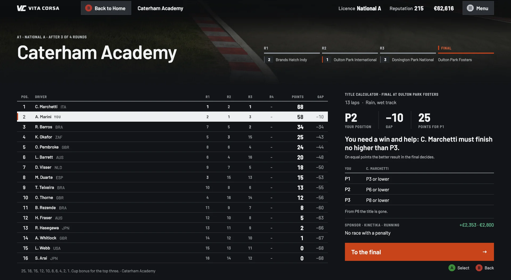
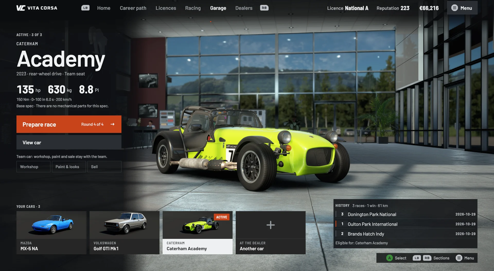
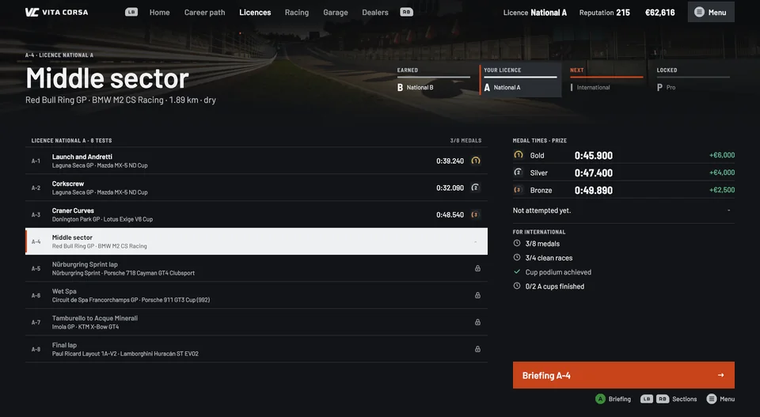
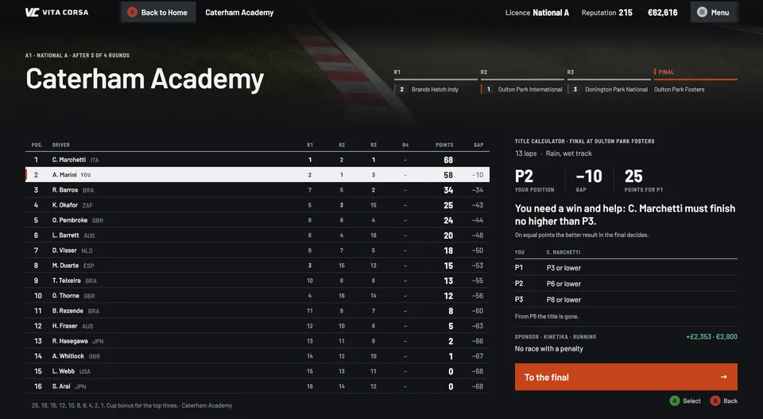
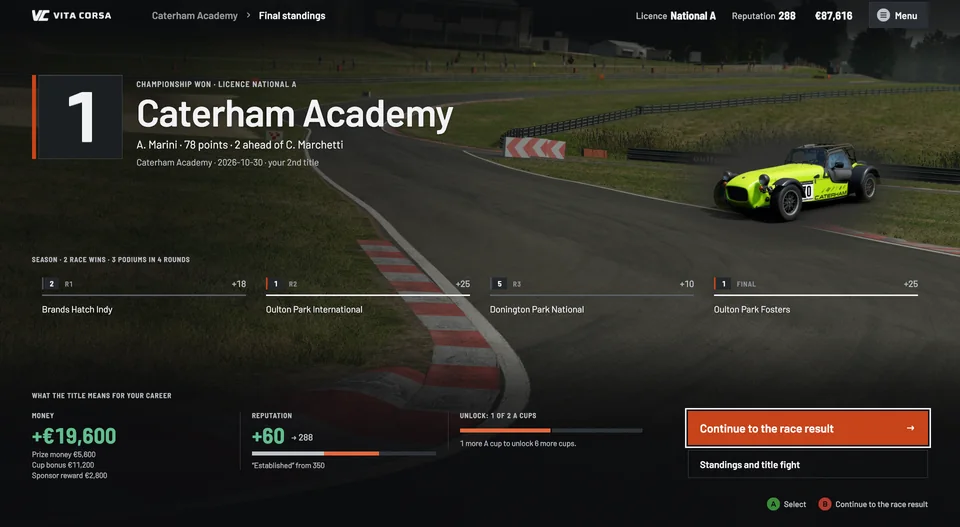
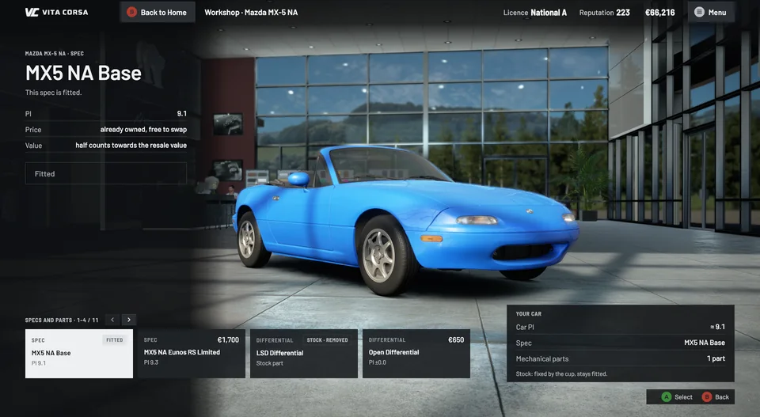

Free career
Start anywhere
All licences and cups open from the start, for those who want to jump straight in.
Free career mod · Assetto Corsa EVO
Start with a national licence and a small budget, buy your first car at the dealer, race in cups and work your way up to the Pro licence.
Windows · AC EVO 0.9.1 from Steam · English and German · Unofficial fan mod, not made or endorsed by Kunos Simulazioni or 505 Games.
The career
Vita Corsa opens from its own tile in the game's main menu and starts every race in the game itself, with its physics, AI and weather. Career money and garage belong to Vita Corsa and are separate from the game's own economy.
A small budget, a first car from the dealer and the first cups.
Eight new licence tests and the cups of the A licence.
Eight more tests and the international cups.
The last licence at the top of the ladder.
Features
Licences
Eight timed tests per licence on real circuits, each with bronze, silver and gold.

Racing
Each cup has entry fees, qualifying, a points table and fixed AI names for the whole season.

Dealers and garage
Dealers sell the cars of AC EVO at researched market prices. Your cars stand in the showroom.
Sponsors and invitations
Results earn prize money, reputation and the attention of sponsors and teams.
Free career
All licences and cups open from the start, for those who want to jump straight in.
Save slots
Several save slots. Careers stay when you update or uninstall Vita Corsa.
Showroom stage
Your car on stage for home, garage, dealer, workshop and invitations; calm boards for everything else.
Input
Every menu works with keyboard and mouse; controller navigation is built in, with little testing on a physical pad so far.
Languages
The whole interface in both languages.
Game updates
The starter rebuilds Vita Corsa's package by itself after a game update.
Mod support
Installed car mods can appear at the dealer and race in every cup whose rules fit them. A second switch lets mod cars join the grid as AI opponents.
Both are optional and off by default, so a fresh career stays pure AC EVO.
Open to mod cars · 14 of 30 cups




"C:\Users\<name>\AppData\Local\Programs\VitaCorsa\VitaCorsa.Starter.exe" %command%FAQ
No. The download contains only Vita Corsa's own files and open-source components with their licence texts, no original game files. On your PC the starter builds a small package from your own installed copy of the game. It is created locally, never distributed, and removed again by the uninstaller.
The starter rebuilds its package automatically after a game update. A larger update can still break Vita Corsa until a new version is released. Until then, hold Shift when you click Play to start the game without it.
Vita Corsa never deletes other mods; files it finds in its place are backed up and put back on uninstall. Only one launcher can sit in front of %command% in Steam. If you already use one, Setup shows the conflict and you decide. Other mods that replace the game's menu or HUD pages have not been tested together with Vita Corsa.
In the game's own save file. They are kept when you update or uninstall Vita Corsa. Back up Saved Games\ACE before installing anyway.
Not tested in the game yet. The 32:9 layout was only checked in a browser preview. Other setups may work; please report what you find.
In the discussion thread on OverTake or on r/assettocorsaevo. Helpful: Windows version, game version, what you did and the exact error text. Logs are in Saved Games\ACE\VitaCorsa\logs; they contain your Windows user name in file paths, so please remove it before posting.
Version 0.1.0 · 30 October 2026
Free download · Windows · AC EVO 0.9.1 from Steam
Enjoying your career? Support development on Ko-fi